Keep ordinary utility creatures and other planeswalker cards out of this list. Jace turns expendable tokens into one of seven major creature payoffs because those are the only creature or planeswalker cards in the ninety-nine. Adding a cheap creature changes that reliability. His +1 can put an expensive creature from your hand back into the library, but putting it on the bottom does not guarantee that the next -3 finds that particular creature.
This Bracket 3 build uses tokens, transformation spells, and blink effects to deploy and reuse large threats. The Game Changers are Consecrated Sphinx, Rhystic Study, and Smothering Tithe. It has 37 lands plus two land-option spells, ten dedicated ramp cards, additional resource engines, and no planned infinite loop, extra-turn chain, or mass land denial. The nine-mana kicked copy finisher is a late-game route after developing resources, not an early compact combo plan.
Build something disposable before casting Jace

Legion's Landing // Adanto, the First Fort
One mana supplies a creature without placing a small creature card in your library. If three creatures can attack safely, the transformed land becomes mana and a recurring token source. Do not sacrifice an established position merely to force that transformation.
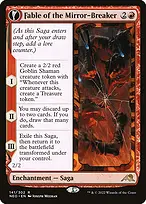
Fable of the Mirror-Breaker // Reflection of Kiki-Jiki

The front face is an enchantment in your library, so it does not dilute Jace's hits. Its Goblin supplies a target or attack-generated Treasure, and the second chapter filters expensive cards. The transformed Reflection copies your nonlegendary threats with haste; all seven creature payoffs qualify. Reflection enters as a new permanent and normally must wait a turn before tapping.
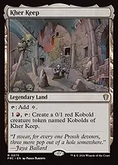
Kher KeepA land-based creature-token source that remains useful after removal clears your enchantments. Creating a token needs two mana plus tapping the land itself. Its normal mana ability produces colorless, so avoid keeping a hand whose only fifth source cannot complete Jace's colors.
Use the new Jace tokens correctly
Empower adds loyalty to a Jace planeswalker TOKEN you control, creating one if necessary. It does not add counters to your nontoken commander. If a Jace token already exists, later empower effects add to it rather than automatically making another. The predefined token has surveil and draw abilities and is not legendary, so it can coexist with your commander. Do not spend its last loyalty counter if you intend to exile it with Jace's -3 afterward.
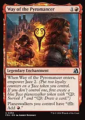
Way of the Pyromancer
Produces a Jace token and grants your planeswalkers a +1 ability that makes red mana. The token can use that ability immediately, then be transformed by the commander later. Activating this on the commander uses his normal loyalty activation for the turn unless Oath of Teferi applies. The granted ability uses the stack; it is not a mana ability despite producing mana.
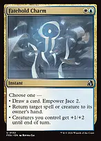
Fatehold Charm
Drawing a card while empowering supplies both selection and a future Jace target. Its alternative mode returns a spell or creature to hand, giving the same slot a defensive use. Returning a spell bypasses uncounterability, but does not permanently remove the card.
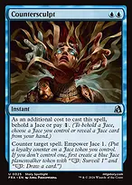
CountersculptCounter a spell and empower Jace. It costs two blue when you can behold a Jace you control or reveal the appropriate card from hand; otherwise pay the additional generic mana. The commander sitting in the command zone does not satisfy behold. A freshly created one-loyalty token is useful transformation fuel, but using its -1 first would put it into the graveyard.
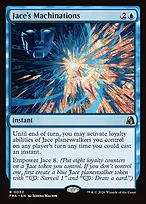
Jace's MachinationsCreates or strengthens a Jace token and permits Jace loyalty activations at instant speed on any player's turn for that turn. The commander can use -3 on an opponent's turn to produce a surprise threat, provided he has enough loyalty and has not already activated that turn. This does not grant unlimited activations or refill the commander's loyalty. A token can also use its own draw ability before becoming transformation fuel if it retains loyalty.
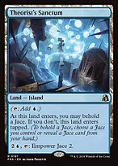
Theorist's SanctumA fetchable Island and repeatable empower source. It enters tapped unless you can behold a Jace; the command zone alone does not help. Its three-mana-plus-tap activation can rebuild a token after Jace exiles the previous one. It produces blue normally, unlike a colorless utility land.
Deploy threats even when the commander is removed
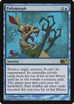
Polymorph
Convert a creature token into one of the seven payoffs. A legal indestructible target is not destroyed but you still perform the reveal instruction, so Grand Crescendo can sometimes preserve the target as well. Opposing removal can make your sole target illegal and stop the spell. It cannot target a planeswalker token.
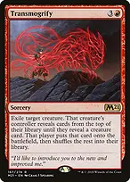
TransmogrifyA second four-mana creature transformation, using exile rather than destruction. Prefer an expendable token; exiling one of your real creatures permanently reduces the threats available for later plays. It does not find planeswalkers, but there are none in the ninety-nine anyway.
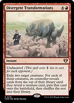
Divergent Transformations
Costs four mana with three opponents and transforms two creatures at instant speed. You need two different legal targets when casting it. If one later becomes illegal, it can still resolve for the other. It becomes more expensive as opponents leave the game, and using an opposing creature as a target may give that player a much stronger replacement.
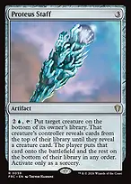
Proteus StaffRepeatable transformation from an artifact that survives creature wipes. Activation is sorcery speed, costs three mana, and only targets a creature. A token put on the bottom disappears; a nontoken creature remains available somewhere in the library. Do not casually give an opponent a free threat with it.
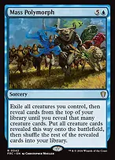
Mass Polymorph
Convert a board of creature tokens into several premium creatures at once. All revealed creatures enter together, so Terror of the Peaks sees the other entering creatures and triggers for each. This EXILES every creature you already control, including existing bombs; cast it before committing those creatures or when trading them away is worth the result. Jace and his planeswalker tokens stay on the battlefield, and those tokens do not increase the number of creature cards found.
Every creature hit has a job
End the game with copies and a protected attack
Reflection of Kiki-Jiki can make a hasty Archon token for both entry and attack triggers. It can also copy Archfiend: if two Archfiends trigger at the same end step, the second calculates life lost after the first resolves, potentially quadrupling the turn's earlier loss. The temporary copy is sacrificed at the end step, but its already-triggered ability still resolves. This is finite and requires the existing creatures and setup.
For a combat finish, choose creature with Serra's Emissary, attack with your flying threats and tokens, then let Archfiend repeat the life loss. Protection from creatures stops blocks but not removal spells, sacrifice effects, or a player paying Jace's tax and attacking him. Preserve interaction for the actual finishing turn.
Reset loyalty and repeat enters abilities
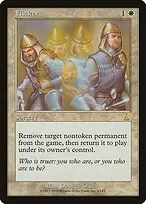
FlickerThis two-mana sorcery can reset your commander because it targets a nontoken permanent. Use an activation, blink Jace back at four loyalty, then use an activation of the new object. It can also repeat Archon or Agent entries. It is not instant-speed protection and cannot target a token.
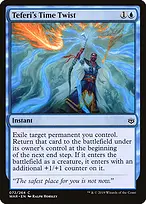
Teferi's Time TwistProtects Jace or another permanent from a removal spell and returns it at the next end step. A returning Jace is a fresh object with starting loyalty, but normal loyalty timing means you usually wait until your next main phase to activate. Leave the commander in exile if you want the delayed return; moving it to the command zone prevents that return.
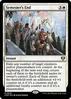
Semester's EndProtects any selected creatures and planeswalkers and returns the nontoken cards at the next end step with an extra relevant counter. Jace returns with five loyalty; your large creatures repeat their enters triggers. Tokens that leave cannot return, so avoid selecting disposable tokens unless losing them is acceptable.
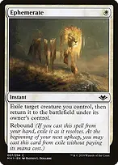
EphemerateOne mana protects a creature and repeats its entry, with rebound for another use next upkeep. It is excellent on Archon or Agent, but cannot target the planeswalker commander. Blinking a token makes it disappear, and returning a creature under its owner's control can give away a creature you stole.
Keep your hand and top card useful
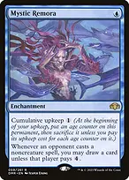
Mystic RemoraEarly protection against falling behind on cards while playing your mana and token setup. Pay cumulative upkeep only while the expected cards justify slowing your own development. Sacrificing it when the cost becomes too high is normal.

BrainstormPut a creature stranded in hand on top, then transform a token to find that exact creature while the top remains unchanged. A fetchland can instead shuffle away unwanted cards. Do not shuffle away your deliberately arranged threat before activating Jace.
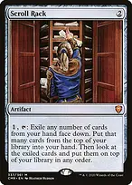
Scroll RackExchanges expensive creatures from hand for fresh cards while arranging the creatures on top. This turns a random Jace activation into a selected payoff when nobody disrupts the top of the library. It is selection rather than automatic card advantage and requires cards in hand to exchange.
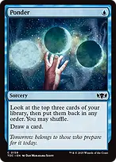
PonderFinds an early land, token source, or interaction and can arrange a creature on top for transformation later. It draws a card after arranging the top three, so plan which card will actually remain on top after that draw. Shuffle when the whole selection is poor.
Fund four colors and retain interaction

Sol RingAccelerates generic costs but supplies none of the four colored symbols in Jace's cost. The five Talismans, Arcane Signet, and Fellwar Stone supply the early fixing. Check the actual colors available rather than assuming a Sol Ring hand automatically casts the commander early; Fellwar Stone depends on opponents' lands.

Swords to PlowsharesEfficient exile for a threat that would stop your setup or combat finish. Path to Exile is the second version, with the drawback of giving its controller a basic land. Preserve these for creatures your blockers and temporary bounce cannot handle.

Soul-Guide LanternGraveyard interaction without adding a weak creature to the transformation pool. It exiles one card on entry and can later sacrifice to exile all opponents' graveyards. The draw ability is a fallback, not a reason to discard important graveyard coverage early.
Recover without relying on Jace

Reanimate
Recover a dead payoff, a creature discarded to Fable, or a useful creature in an opponent's graveyard. An eight-mana creature costs eight life to return. It cannot retrieve creatures exiled by Jace, Transmogrify, or Mass Polymorph, and it cannot return the planeswalker commander.
With Jace repeatedly removed, use the five transformation cards, cast creatures normally with your rocks and Treasures, or build a token attack with Caretaker's Talent. Consecrated Sphinx, Archon, Black Market Connections, and the enchantment draw engines keep this from being entirely commander-dependent. You still need actual creature tokens for the backup transformation cards; the empower tokens only work with Jace's own -3.
What to keep and how to sequence
Keep three or four lands with a credible route to all four colors, a cheap token producer, and either a two-mana rock or early card access. A counterspell or removal spell improves the keep. Mulligan hands dominated by the seven expensive creatures with no Brainstorm, Scroll Rack, token plan, or mana development.
An example keep is Flooded Strand, Blood Crypt, Command Tower, Talisman of Progress, Bitterblossom, Swan Song, and Brainstorm. Fetch Tundra for white and blue; Blood Crypt supplies black and red. Sequence the Talisman and Bitterblossom over the next turns according to pressure. With a fourth land, the rock can cast Jace on turn four and an existing Faerie can become a threat immediately, though that line may leave no protection mana.
The lands prioritize fetches, original duals, shocks, and broad fixing. Raffine's Tower and Xander's Lounge are best fetched when you can absorb the tapped entry. The two basics give Island and Plains targets for effects that specifically demand a basic. Theorist's Sanctum is a utility Island, and Kher Keep is the only normally colorless land. Choose fetch targets to establish the four colors before chasing triple white for a naturally cast Serra's Emissary.
Before each -3, count loyalty and confirm the target remains expendable. A first activation takes Jace from four to one; without resets or other bonuses, two later +1 activations reach three, and spending all three then puts Jace into the graveyard before the ability resolves. You can move him to the command zone and the ability still resolves if its target remains legal. Do not mistake the tax or empower mechanic for protection against every answer.
Use +1 when you need cards or to return an expensive creature from hand to the library. Use Brainstorm or Scroll Rack when you need a particular creature immediately. Preserve a blink spell for either a loyalty reset or a critical removal response, and remember that delayed-return blink does not give an immediate extra activation.
The usual progression is token and mana development, one protected threat, then a second threat or repeatable entry engine. Look for a protected combat finish with Archfiend, a late kicked Rite, or enough token creatures to justify Mass Polymorph. Avoid exiling a board that is already winning simply to reveal more cards, and leave mana for the answer that could otherwise stop the finishing turn.